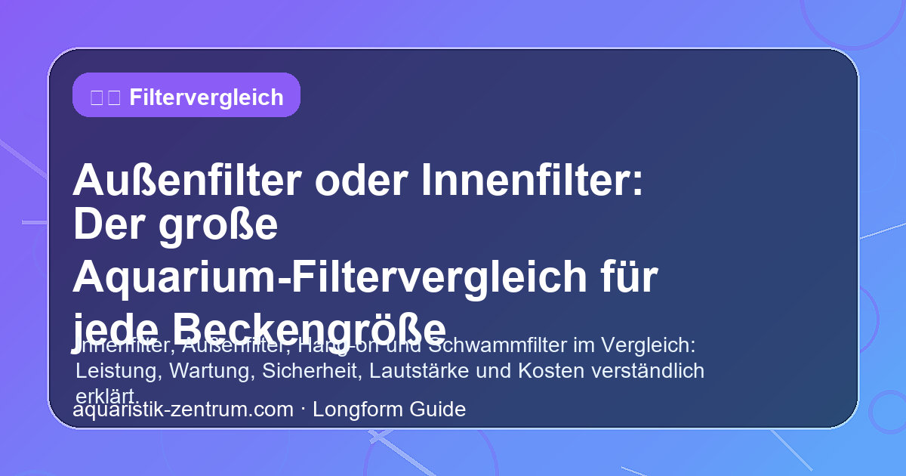

Außenfilter oder Innenfilter: Der große Aquarium-Filtervergleich für jede Beckengröße

Die Wahl des richtigen Filters gehört zu den wichtigsten Entscheidungen bei der Einrichtung eines Aquariums. Kaum ein anderer technischer Bestandteil beeinflusst die Wasserqualität, den Pflegeaufwand und letztlich das Wohlbefinden der Fische und Pflanzen so stark wie die Filteranlage. Doch welche Lösung ist die richtige für Ihr Becken? In diesem ausführlichen Vergleich zeigen wir Ihnen die Vor- und Nachteile von Außen- und Innenfiltern, helfen Ihnen bei der Entscheidung für Ihre Beckengröße und geben praktische Kauftipps.
Egal, ob Sie ein kleines Nano-Aquarium auf dem Schreibtisch, ein Gesellschaftsbecken im Wohnzimmer oder ein großes Südamerika-Becken betreiben – die Filtertechnik muss zur Beckengröße, zum Besatz und zum gewünschten Pflegeaufwand passen. Wir beleuchten alle relevanten Kriterien und helfen Ihnen, den perfekten Filter für Ihr Aquarium zu finden.
1. Filtertypen im Überblick
Bevor wir in die Details einsteigen, geben wir Ihnen einen schnellen Überblick über die gängigsten Aquariumfilter-Typen und ihre primären Einsatzbereiche:
| Filtertyp | Ideale Beckengröße | Filtervolumen | Preisklasse | Besonderheit |
|---|---|---|---|---|
| Innenfilter | Bis 60 Liter | Gering bis mittel | € 10 – 50 | Einfachste Montage, direkt im Becken |
| Außenfilter | Ab 60 Liter | Groß | € 50 – 300+ | Hohe Leistung, viel Medienvolumen |
| Hang-On-Filter | 10 – 60 Liter (Nano) | Gering | € 15 – 60 | Platzsparend, einfache Montage |
| Schwammfilter | Alle Größen (Vor-/Zuchtfilter) | Gering | € 5 – 30 | Ideal für Garnelen, Jungfische, Vorfilter |
| Hamburger Mattenfilter | Spezialbecken | Groß | € 20 – 80 | Optisch unsichtbar, biologische Filterung |
2. Innenfilter – Der Klassiker für kleine Becken
Innenfilter werden direkt im Aquarium installiert und sind die wohl bekannteste Filterart. Sie sind kompakt, günstig und in der Anschaffung sowie Wartung unkompliziert. Ihr größter Vorteil: Sie benötigen keinerlei Schlauchverbindungen oder Bohrungen im Aquarium – einfach ansaugen, im Becken positionieren und los geht es.
Vorteile von Innenfiltern
- Niedriger Anschaffungspreis: Bereits ab etwa 10 bis 15 Euro erhalten Sie funktionstüchtige Modelle für Einsteigerbecken.
- Einfache Montage: Keine Schläuche, keine zusätzlichen Bohrungen – der Filter wird direkt im Aquarium platziert und ist sofort betriebsbereit.
- Geringer Stromverbrauch: Kleine Pumpen benötigen meist nur 3–8 Watt, was die Betriebskosten niedrig hält.
- Vielseitig einsetzbar: Als Hauptfilter in kleinen Becken oder als Zusatzfilter für mehr Strömung und biologische Filterung.
- Einfache Wartung: Filtermedien sind schnell zugänglich und lassen sich ohne großen Aufwand reinigen oder austauschen.
Nachteile von Innenfiltern
- Platzbedarf im Becken: Der Filter nimmt wertvollen Raum im Aquarium, der für Gestaltung und Schwimmraum fehlt.
- Begrenztes Filtervolumen: Durch die kompakte Bauweise steht nur wenig Platz für Filtermaterial zur Verfügung – die biologische Filterkapazität ist daher eingeschränkt.
- Leistungsgrenze: Für Becken ab etwa 60 Litern und insbesondere bei starkem Fischbesatz stoßen Innenfilter schnell an ihre Grenzen.
- Optik: Der Filter ist im Aquarium sichtbar und kann die natürliche Gestaltung beeinträchtigen.
Für kleine Einsteigerbecken bis 30 Liter sowie Zucht- und Quarantänebecken sind Innenfilter eine ausgezeichnete Wahl. Auch als Zusatzfilter für mehr Strömung oder biologische Filterleistung in größeren Aquarien werden sie gerne eingesetzt. Sobald das Becken jedoch eine Größe von 60 Litern überschreitet oder ein hoher Fischbesatz geplant ist, sollten Sie zu einem leistungsstärkeren System greifen.
🛒 Innenfilter Empfehlung
Für kleine Becken bis 60 Liter empfehlen wir die bewährten Eheim Innenfilter oder die preisgünstigen Alternativen von Tetra. Sie bieten zuverlässige Filterleistung und einfache Handhabung.
👉 Innenfilter bei Amazon entdecken3. Außenfilter – Die Profi-Lösung für anspruchsvolle Aquarien
Außenfilter werden außerhalb des Aquariums aufgestellt, meist im Unterschrank. Das Wasser wird durch Zu- und Ablaufschläuche zum Filtergehäuse und zurück ins Becken gepumpt. Diese Bauweise ermöglicht ein deutlich größeres Filtervolumen und eine höhere Durchflussleistung – die entscheidenden Vorteile gegenüber Innenfiltern.
Vorteile von Außenfiltern
- Großes Filtervolumen: Im Gehäuse ist ausreichend Platz für mehrere Filterschaumstoffe, dichte Filterwatten, Keramikringe, Zeolith und andere Spezialmedien. Das Wasser wird nicht nur mechanisch, sondern vor allem biologisch hervorragend gereinigt.
- Hohe Durchflussleistung: Leistungsstarke Pumpen sorgen für einen effektiven Wasserkreislauf – ideal für Becken ab 60 Litern und große Aquarien mit mehreren hundert Litern.
- Unsichtbare Technik: Der Filter steht versteckt im Unterschrank – das Aquarium bleibt frei von störender Technik und wirkt natürlicher.
- Bessere Sauerstoffversorgung: Der Rücklauf des Wassers erzeugt Oberflächenbewegung, die den Gasaustausch fördert und für eine optimale Sauerstoffversorgung sorgt.
- Flexible Medienbestückung: Unterschiedliche Filtermedien können in Körben oder Lagen kombiniert werden – von der groben Vorfilterung bis zur Feinstfiltration und chemischen Wasseraufbereitung.
Nachteile von Außenfiltern
- Höherer Anschaffungspreis: Gute Außenfilter kosten zwischen 50 und über 300 Euro – eine deutliche Investition gegenüber Innenfiltern.
- Aufwendigere Installation: Schläuche müssen verlegt, der Filter korrekt positioniert und abgedichtet werden. Bei der Einrichtung ist Sorgfalt gefragt, um späteren Leckagen vorzubeugen.
- Schlauchsystem: Die Schläuche können mit der Zeit durch Algen oder Ablagerungen verstopfen und müssen regelmäßig gereinigt werden.
- Platzbedarf außerhalb: Der Unterschrank muss ausreichend Platz für den Außenfilter bieten – bei kleinen Aquarienständern kann dies zum Problem werden.
- Leckagerisiko: Durch die Schlauchverbindungen besteht – wenn auch geringes – Risiko von Wasseraustritt. Hochwertige Modelle wie Eheim oder Oase sind hier jedoch äußerst zuverlässig.
🛒 Außenfilter Empfehlung
Für Becken ab 60 Litern sind Außenfilter von Eheim (Classic oder Pro-Serie), Oase (BioMaster) oder JBL (CristalProfi) die erste Wahl. Sie überzeugen durch Langlebigkeit, starke Pumpen und durchdachte Filtertechnik.
👉 Außenfilter bei Amazon vergleichen4. Hang-On- und Schwammfilter – Spezialisten für besondere Einsätze
Hang-On-Filter (HMF / HOF)
Hang-On-Filter werden außen an die Aquarienscheibe gehängt und pumpen das Wasser durch einen kleinen Filterkasten. Sie vereinen einige Vorteile von Innen- und Außenfiltern: Sie nehmen keinen Platz im Becken ein, sind schnell montiert und benötigen keine Schlauchverbindungen ins Aquarium. Gleichzeitig ist ihr Filtervolumen jedoch begrenzt. Sie eignen sich hervorragend für Nano-Aquarien bis etwa 30 Litern, bei denen ein Innenfilter zu viel Platz wegnehmen würde.
Schwammfilter
Schwammfilter sind die einfachste und zugleich biologisch effektivste Filterform. Ein grobporiger Filterschaum wird von einer Luftpumpe oder einer kleinen Wasserpumpe durchströmt. Die große Oberfläche des Schwamms bietet Milliarden nützlicher Bakterien einen idealen Siedlungsplatz. Schwammfilter werden bevorzugt eingesetzt:
- In Aufzuchtbecken, da sie keine Jungfische ansaugen
- In Garnelenbecken, wo eine sanfte Strömung gewünscht ist
- Als Vorfilter an Außenfiltern, um grobe Verschmutzungen abzufangen
- In Quarantänebecken dank einfacher Reinigung und Desinfektion
Experten-Tipp: Gerade für Garnelenbecken und Zuchtbecken sind Schwammfilter nicht wegzudenken. Sie bieten eine sichere, sanfte Filtration und können mit einer Luftpumpe auch bei Stromausfall kurzzeitig überbrückt werden.
5. Durchfluss und Filtervolumen – Die entscheidenden Kennzahlen
Zwei Kennzahlen sind bei der Wahl des richtigen Filters besonders wichtig: die Durchflussrate und das nutzbare Filtervolumen.
Die richtige Durchflussrate
Als Faustregel gilt: Der Filter sollte das gesamte Aquariumvolumen 3- bis 5-mal pro Stunde umwälzen können. Für ein 100-Liter-Becken bedeutet das eine Pumpenleistung von 300 bis 500 Litern pro Stunde. Bei starkem Fischbesatz oder empfindlichen Pflanzen kann eine höhere oder niedrigere Durchflussrate sinnvoll sein. Achten Sie beim Kauf auf die effektive Förderhöhe – die angegebene Maximalleistung gilt meist ohne Filtermedien und Schlauchwiderstand.
Filtervolumen und biologische Leistung
Das Filtervolumen bestimmt maßgeblich die biologische Filterkapazität. Je mehr Filtermaterial (Schwämme, Keramikringe, Bio-Medien) Platz findet, desto mehr nützliche Bakterien können siedeln und desto stabiler ist das biologische Gleichgewicht im Aquarium. Außenfilter haben hier einen klaren Vorteil: Während Innenfilter meist nur 0,3 bis 0,8 Liter Filtermaterial fassen, bieten Außenfilter ab 2 Litern aufwärts – bei großen Modellen sogar bis zu 15 Liter Volumen.
| Beckengröße | Empfohlener Filtertyp | Min. Durchfluss (3x Volumen) | Empf. Filtervolumen |
|---|---|---|---|
| 10–30 Liter (Nano) | Innenfilter / Hang-On / Schwammfilter | 30–150 l/h | 0,1–0,3 Liter |
| 30–60 Liter | Innenfilter / kleiner Außenfilter | 90–300 l/h | 0,3–1,0 Liter |
| 60–120 Liter | Außenfilter | 180–600 l/h | 1,0–3,0 Liter |
| 120–250 Liter | Außenfilter (mittel) | 360–1250 l/h | 3,0–6,0 Liter |
| 250–500 Liter | Außenfilter (groß) | 750–2500 l/h | 6,0–12,0 Liter |
6. Wartung und Sicherheit
Die regelmäßige Wartung ist für die dauerhafte Funktion Ihres Aquariums unerlässlich – unabhängig vom gewählten Filtersystem. Hier ein Vergleich des Pflegeaufwands:
Innenfilter warten
Innenfilter sind wartungsfreundlich. Die Filtermedien sind direkt zugänglich, der Filter lässt sich im Handwaschbecken reinigen. Einmal pro Monat sollten die Schwämme in abgestandenem Aquarienwasser ausgedrückt werden – niemals unter fließendem Leitungswasser, da das Chlor die nützlichen Bakterien abtötet. Etwa alle 6–8 Wochen ist ein vollständiger Check sinnvoll.
Außenfilter warten
Die Wartung eines Außenfilters ist aufwändiger: Der Filter muss vom Strom getrennt, die Schlauchklemmen geschlossen und das Gehäuse geöffnet werden. Je nach Modell sind die Filtermedien in Körben angeordnet, die einzeln gereinigt werden können. Der Reinigungsintervall liegt bei 6–8 Wochen – dank des größeren Filtervolumens sind Außenfilter jedoch toleranter und verstopfen seltener als kleine Innenfilter.
Sicherheit bei Außenfiltern
Moderne Außenfilter verfügen über Sicherheitsventile an den Schlauchanschlüssen (Schnellverschlüsse), die ein tropffreies Trennen der Schläuche ermöglichen. Hochwertige Modelle besitzen zudem eine Priming-Funktion (automatische Ansaugung), die das lästige manuelle Ansaugen nach der Reinigung überflüssig macht.
7. Kostenvergleich
Die Gesamtkosten eines Filtersystems setzen sich aus Anschaffungspreis, Betriebskosten (Stromverbrauch) und Wartungskosten (Ersatzmedien) zusammen. Die folgende Tabelle gibt Ihnen eine realistische Einschätzung:
| Kostenfaktor | Innenfilter | Außenfilter | Hang-On-Filter | Schwammfilter |
|---|---|---|---|---|
| Anschaffung | € 10 – 50 | € 50 – 300+ | € 15 – 60 | € 5 – 30 |
| Stromkosten (pro Jahr) | € 5 – 15 | € 15 – 40 | € 5 – 12 | € 2 – 8 (Luftpumpe) |
| Ersatzmedien (pro Jahr) | € 10 – 25 | € 20 – 50 | € 10 – 20 | € 5 – 15 |
| Gesamtkosten (2 Jahre) | € 40 – 130 | € 120 – 430 | € 45 – 120 | € 20 – 70 |
| Preis-Leistungs-Verhältnis | ⭐⭐⭐☆☆ | ⭐⭐⭐⭐☆ | ⭐⭐⭐☆☆ | ⭐⭐⭐⭐⭐ |
Wichtig: Die günstigeren Innenfilter sind nicht automatisch die bessere Wahl. Bei mittleren und großen Becken zahlen Sie mit einem leistungsschwachen Filter schnell einen hohen Preis in Form von Algenproblemen, schlechter Wasserqualität und kranken Fischen. Investieren Sie daher lieber gleich in ein durchdachtes Filtersystem, das zu Ihrem Becken passt.
8. Entscheidungsmatrix: Welcher Filter passt zu Ihnen?
| Ihre Situation | Empfehlung | Begründung |
|---|---|---|
| Einsteiger, Becken < 30 Liter | Innenfilter | Günstiger Einstieg, einfache Handhabung, ausreichend für kleine Becken |
| Einsteiger, Becken 30–60 Liter | Innenfilter oder günstiger Außenfilter | Guter Kompromiss aus Kosten und Leistung; Außenfilter bietet Luft nach oben |
| Fortgeschritten, Becken 60–250 Liter | Außenfilter | Deutlich bessere Filterleistung, mehr Medienvolumen, unsichtbare Technik |
| Großbecken > 250 Liter | Außenfilter (groß) | Hohe Durchflussrate, großes Filtervolumen, stabile Wasserwerte unverzichtbar |
| Nano-Aquarium, Design im Fokus | Hang-On-Filter | Kein Platzverlust im Becken, dezente Optik, einfache Montage |
| Garnelenbecken | Schwammfilter | Sanfte Strömung, sicher für Jungtiere, optimale biologische Filterung |
| Zuchtbecken / Aufzucht | Schwammfilter | Keine Soggefahr für Jungfische, einfache Reinigung, kostengünstig |
| Budget begrenzt, trotzdem gute Leistung | Innenfilter + Schwammfilter | Kombination aus mechanischer und biologischer Filterung zu niedrigen Kosten |
| Hoher Fischbesatz, viel Futter | Außenfilter (Überdimensionierung) | Bei stark belasteten Becken lieber eine Nummer größer wählen – mehr Filtervolumen = stabileres System |
🛒 Die richtige Filterlösung für Ihr Aquarium
Ob Innenfilter, Außenfilter oder Schwammfilter – bei Amazon finden Sie eine riesige Auswahl für jede Beckengröße und jeden Geldbeutel. Besonders beliebt und geprüft: Eheim Außenfilter und Tetra Innenfilter.
👉 Alle Aquarium-Filter bei Amazon ansehen9. Häufig gestellte Fragen (FAQ)
Welcher Filter ist leiser: Außen- oder Innenfilter?
In der Regel sind Außenfilter leiser, da die Pumpe im geschlossenen Gehäuse unter dem Aquarium steht. Innenfilter können durch Vibrationen am Glas störende Geräusche verursachen. Hochwertige Modelle beider Bauarten sind jedoch gut gedämmt und arbeiten nahezu lautlos.
Kann ich einen Innenfilter und Außenfilter kombinieren?
Ja, das ist durchaus sinnvoll! In großen Aquarien oder bei starkem Besatz kann ein Außenfilter als Hauptfilter und ein Innenfilter als Zusatzfilter für mehr Strömung oder biologische Filterung eingesetzt werden. Auch die Kombination aus Außenfilter und Schwammfilter (als Vorfilter) ist sehr effektiv.
Wie oft muss ich einen Außenfilter reinigen?
Je nach Besatz und Futtermenge alle 6–10 Wochen. Ein häufiger Fehler ist die zu intensive Reinigung: Die Filtermedien sollten nur in abgestandenem Aquarienwasser ausgespült werden, um die Bakterienkulturen zu schonen.
Ist ein Außenfilter für ein 20-Liter-Nano-Becken geeignet?
Eher nicht. Für kleine Nano-Becken sind Außenfilter überdimensioniert und erzeugen zu starke Strömung. Hier sind Hang-On-Filter oder kleine Innenfilter die bessere Wahl. Eine Ausnahme bilden spezielle Mini-Außenfilter, die jedoch selten und teuer sind.
Was ist der beste Filter für ein 60-Liter-Aquarium?
Ein 60-Liter-Becken ist der klassische Grenzbereich. Ein guter Innenfilter reicht aus, ein kleiner Außenfilter (z. B. Eheim Classic 2211 oder JBL CristalProfi e401) bietet jedoch bereits mehr Reserven und eine bessere biologische Filterung – besonders bei einem geplanten Besatzwechsel oder späterer Vergrößerung.
Kann ich einen Außenfilter unterhalb des Aquariums aufstellen?
Ja, das ist der Normalfall. Die meisten Außenfilter sind für den Betrieb unter dem Aquarium ausgelegt. Wichtig ist, dass sich der Filter nicht mehr als 1,5 bis 2 Meter unterhalb des Wasserspiegels befindet, da die Pumpe sonst zu viel Kraft für den Rücklauf benötigt.
Wie wichtig ist die biologische Filterung im Vergleich zur mechanischen?
Die biologische Filterung ist das Herzstück eines jeden Aquarienfilters. Während die mechanische Filterung lediglich sichtbare Partikel entfernt, bauen die Bakterien im Filtermaterial giftige Stoffwechselprodukte (Ammonium/Ammoniak und Nitrit) ab. Ohne eine ausreichende biologische Filterung ist kein dauerhaft gesundes Aquarium möglich.
Fazit
Die Entscheidung zwischen Außen- und Innenfilter hängt maßgeblich von Ihrer Beckengröße, Ihrem Budget und Ihren Ansprüchen ab. Für kleine Becken bis 30 Liter sind Innenfilter völlig ausreichend und die kostengünstigste Lösung. Ab 60 Litern empfehlen wir den Umstieg auf einen Außenfilter – die Investition zahlt sich in stabileren Wasserwerten, gesünderen Fischen und weniger Pflegeaufwand aus.
Für Spezialfälle wie Nano-Becken, Garnelenhaltung oder Zuchtbecken greifen Sie zu Hang-On- oder Schwammfiltern. Unser wichtigster Rat: Planen Sie beim Filter lieber eine Nummer größer als zu knapp. Ein überdimensionierter Filter läuft effizienter, muss seltener gereinigt werden und bietet mehr Reserven für Schwankungen im biologischen Gleichgewicht.
Unser Kauftipp: Für Einsteiger mit Becken unter 60 Litern empfehlen wir einen hochwertigen Innenfilter von Tetra oder Eheim. Für alle, die ein mittleres oder großes Becken betreiben oder planen, sich zu vergrößern, lohnt sich der direkte Griff zu einem Außenfilter von Eheim, Oase oder JBL. Die Mehrinvestition von 30–50 Euro gegenüber einem einfachen Innenfilter ist auf lange Sicht die beste Entscheidung für Ihr Aquarium.

Außenfilter (links) und Innenfilter (rechts) im direkten Vergleich – die wichtigsten Unterschiede auf einen Blick.